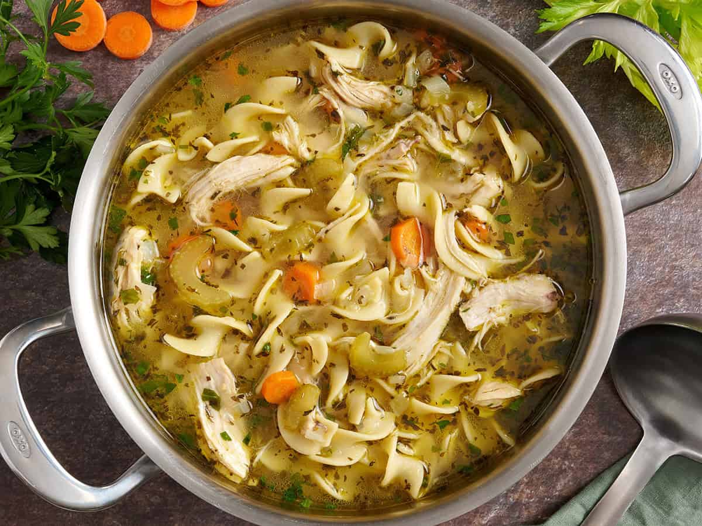

Chicken Noodle Soup

Description
Chicken noodle soup is a warm, comforting dish made with tender chicken, noodles, vegetables, and a flavorful broth. It’s light but satisfying, with simple ingredients like carrots, celery, onions, and herbs coming together to create a classic homemade flavor.
The broth is the heart of the soup, giving every bite a cozy, soothing taste. The chicken adds protein and richness, while the noodles make it filling without feeling too heavy. It’s the kind of meal that feels perfect on a cold day, when you’re feeling under the weather, or anytime you want something simple and comforting.
Ingredients
- Ginger
- Garlic
- Turmeric
- Chicken
- Fresh herbs; Rosemary and Thyme
- Veggies of your choice including onions
- Pearl couscous
How to make it
- Warm oil in a large pot and cook veggies until onions soften
- Combine the soup by stirring in giner and turmeric for 30 seconds, then stir rest of soup ingredients
- Add the couscous by bringing the soup to a boil and stirring it in and then letting it simmer uncovered until the chicken is cooked.
- Shred the chicken once cooked and shred with 2 forks and place back into the pot
- Stir in frozen peas if you'd like and make final adjustments to seasonings.
Congratulations! You now have Chicken Noodle Soup!
Return to Recipes Page